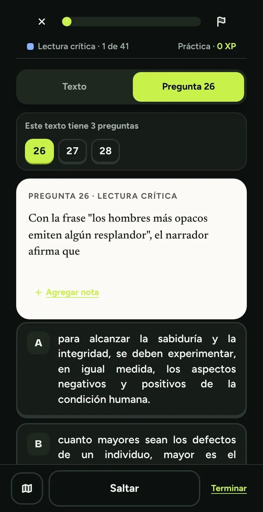
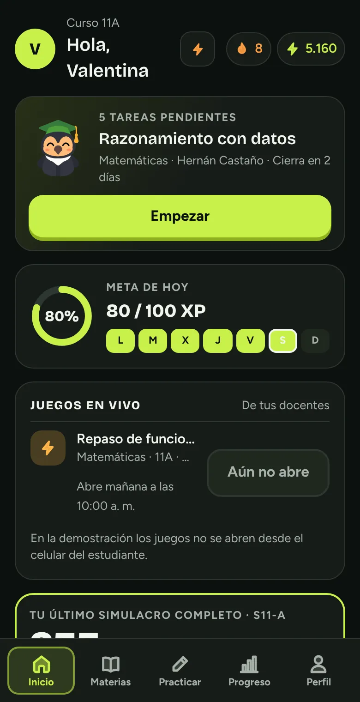
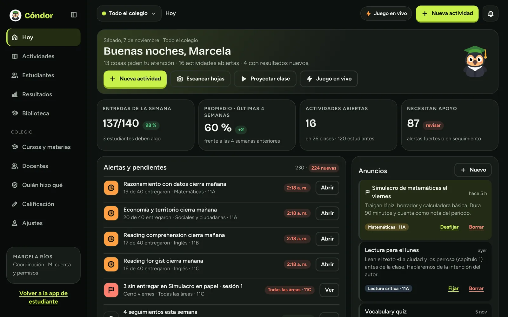

Simulacros como el día del examen
- Sesión 1 y Sesión 2 con el tiempo real
- Puntaje de 0 a 500 y por cada prueba
- Nivel de desempeño y percentil nacional, estimados

Más de 4.300 preguntas de cuadernillos que publicó el ICFES, simulacros con tiempo y tu puntaje de 0 a 500. Entras con tu cuenta de Google y en segundos estás respondiendo.
Una pregunta real del cuadernillo S11-B. Toca una opción, como en la app.
Pregunta 8 · Matemáticas
Para hallar los valores de x que cumplen (x − 1)² − (−2)² = 0, una persona hace este procedimiento, que tiene un error:
¿En qué paso está el error?
Fuente: ICFES, Saber 11, cuadernillo S11-B · Sesión 1
Así es Cóndor
Hoy practicar con las preguntas del ICFES es gratis. Solo entras con tu cuenta de Google.
Preguntas de cuadernillos que publicó el ICFES, cada una con su fuente. Tu puntaje usa los pesos, niveles y percentiles oficiales; es un estimado.
Te comparas con tu meta, no con tus compañeros. Nadie ve una tabla de posiciones.
Cinco preguntas en el bus o un simulacro completo con el tiempo real. Sigues donde ibas, en el celular o en el computador.


Lo que más nos dicen los estudiantes antes del Saber 11. Toca cada una.
Presenta un Saber 11 que ya salió, con sus preguntas y respuestas.

Durante la demostración todo es gratis. Cuando fijemos los precios, quienes se registren aquí tendrán un descuento de lanzamiento.
Gratis
No. Cóndor es una plataforma independiente y no está afiliada al ICFES. Usamos preguntas de cuadernillos que el ICFES publicó, y cada una indica su fuente.
Sí, entras con tu cuenta de Google, la que ya usas. Es gratis y tarda unos segundos. Si tu colegio usa Cóndor, entra con el correo del colegio: ahí ves tus tareas y tu docente ve cómo vas.
Es un estimado. Usamos los pesos, niveles y percentiles oficiales, pero la dificultad de cada pregunta y algunas claves son estimadas. Sirve para orientarte, no reemplaza el resultado oficial.
Durante la demostración es gratis. Si te registras en la lista, tendrás un descuento cuando abramos los precios.
Toca Marcar para revisar debajo de la pregunta y cuéntanos qué está mal. Lo corregimos.
Para practicar entras con Google: guardamos tu nombre, tu correo y qué preguntas respondes, para guardar tu avance y mejorar Cóndor. No hay rankings ni publicidad. Si nos dejas tu correo o un comentario, lo usamos solo para responderte. Lee la política de privacidad.